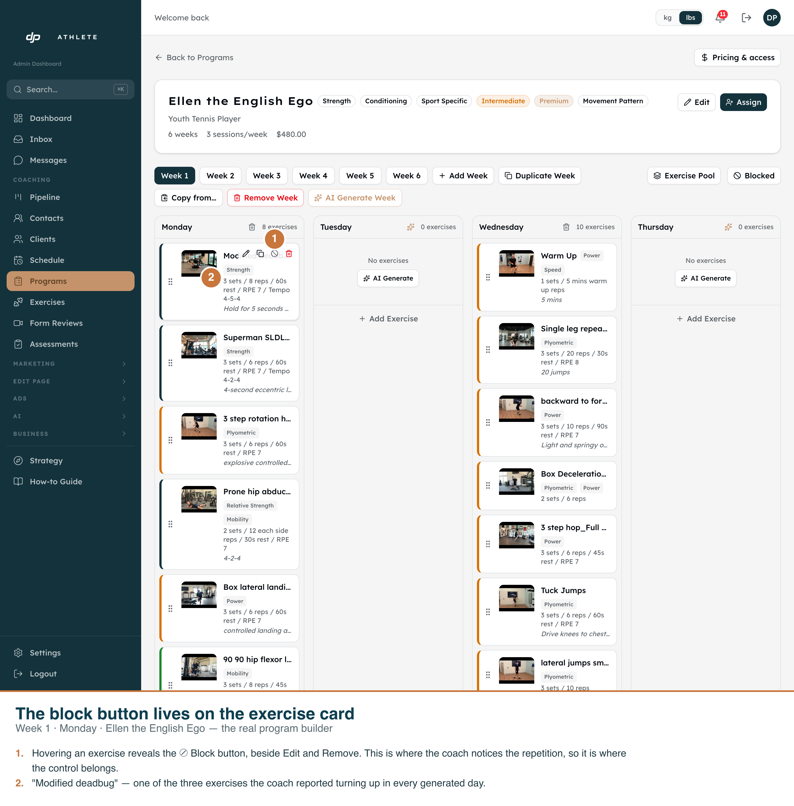
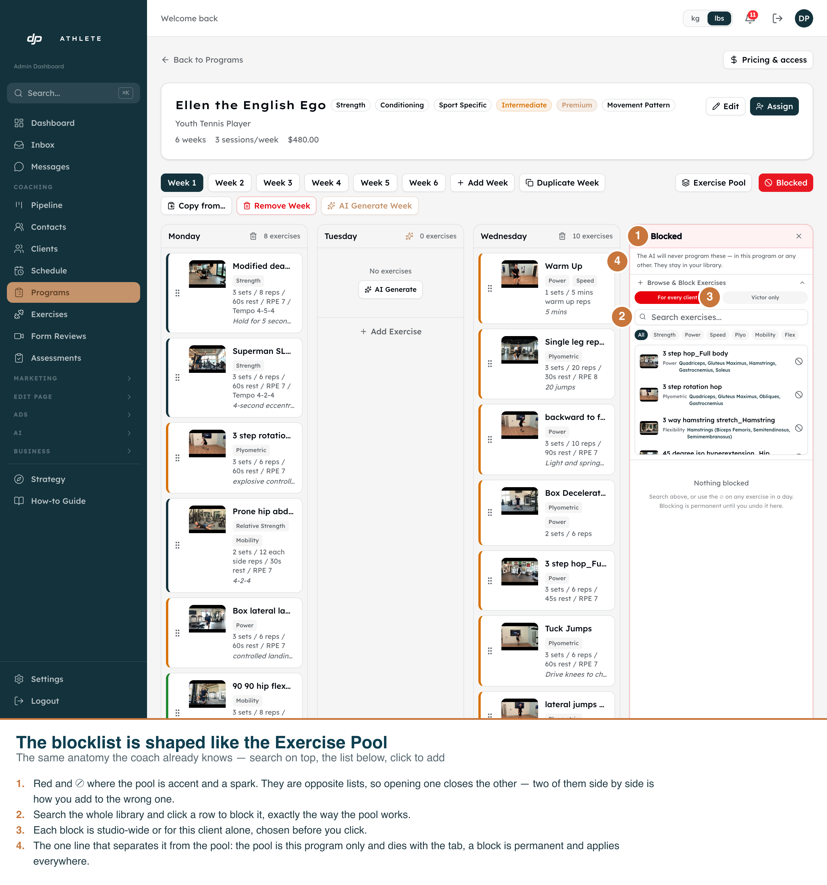
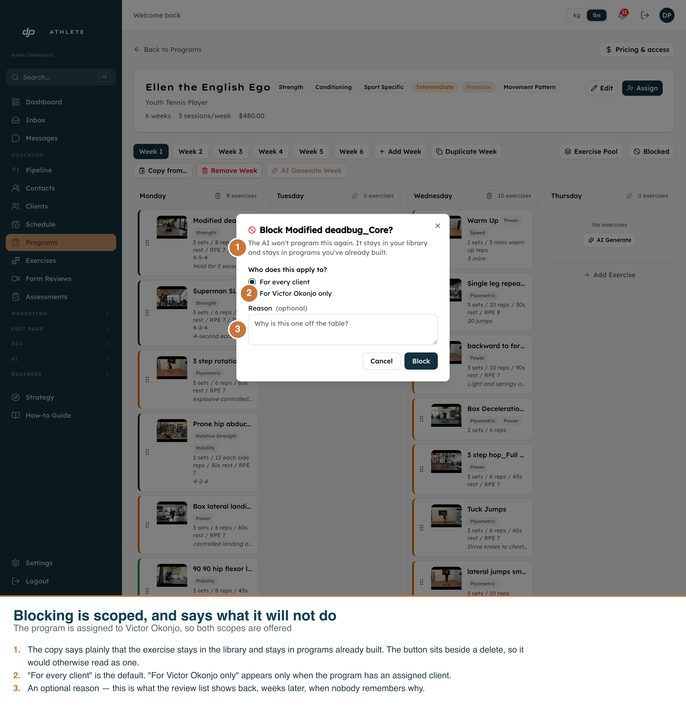
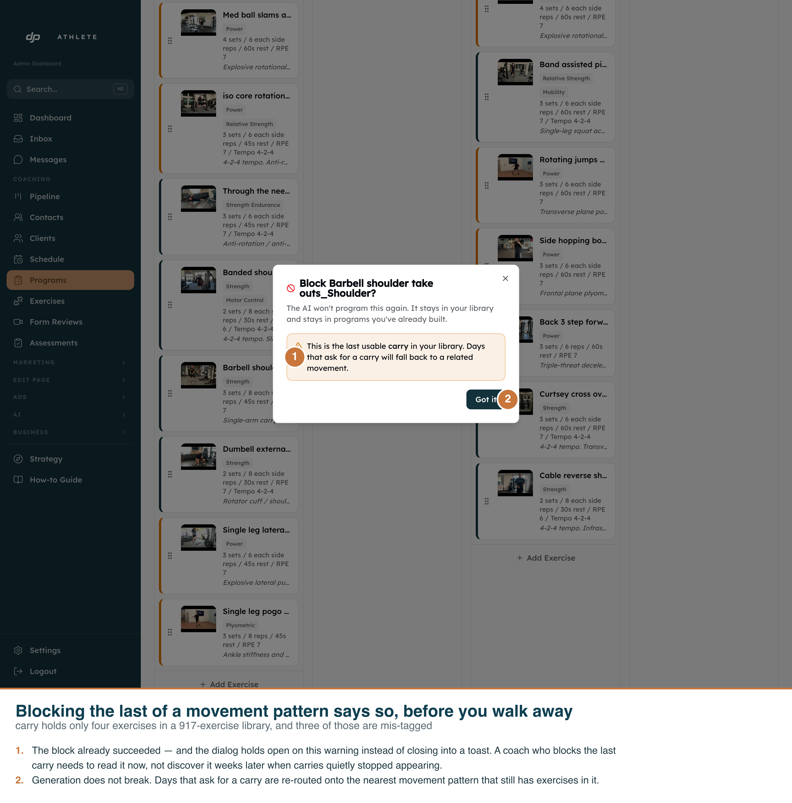
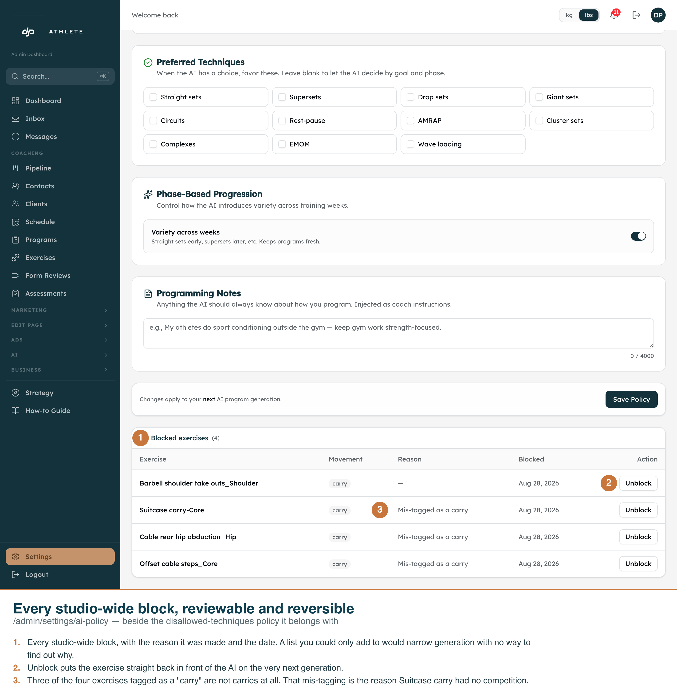
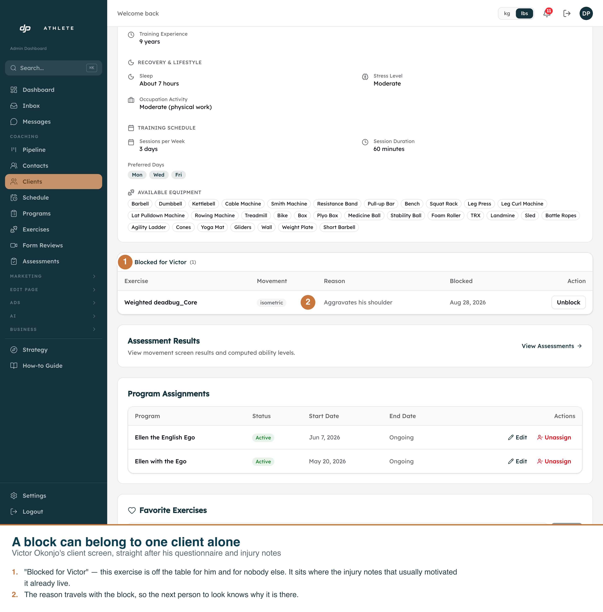

Six screenshots of the real app on its real routes, captured by
scripts/capture-exercise-blocks-screenshots.mjs. Every callout is burned into the PNG,
so each file stands on its own.
Date 2026-08-28Branch worktree-exercise-blocklistCaptured at 1440 CSS px × DSF 2 = 2880 px nativeTheme light onlyData dev clone
Light only is deliberate. The admin components were never built against the
.dark class variant — forcing it breaks existing pages — so there is no second
rendering to capture.
The dev clone was left exactly as found. The five block rows this run created
were removed again in a finally; the run reports
0 remain in exercise_blocks. Nothing touched production.

01 · The block button lives on the exercise card.
Week 1 · Monday of “Ellen the English Ego”.
1Hovering reveals ⊘ Block beside Edit and Remove.
2The card is a deadbug — one of the three exercises Darren named.

02 · The blocklist is shaped like the Exercise Pool.
Same anatomy — search on top, list below, click a row to act.
1Red and ⊘ where the pool is accent and a spark; opening one closes the other.
2Search the whole library.
3Studio-wide or this client alone, chosen before you click.
4The line that separates it from the pool: a block is permanent and applies everywhere.

03 · Blocking is scoped, and says what it will not do.1The copy states the exercise stays in the library and in programs already built.
2“For every client” is the default; “For Victor Okonjo only” appears because
this program has an assigned client.
3An optional reason, shown back in the review lists.

04 · Blocking the last of a movement pattern says so.
Only four exercises in the 917-exercise library are tagged carry, and three are mis-tagged.
1The block succeeded and the dialog holds open on the warning rather than
closing into a toast.
2Generation does not break — the slot is re-routed to a covered pattern.

05 · Every studio-wide block, reviewable and reversible./admin/settings/ai-policy, below the technique policy it belongs with.
1Exercise, movement pattern, reason and date.
2Unblock returns it to the AI on the next generation.
3The three mis-tagged “carries” are visible here — the library problem this
feature deliberately does not fix.

06 · A block can belong to one client alone.
Victor Okonjo’s screen, straight after his questionnaire and injury notes.
1“Blocked for Victor” — this exercise is off the table for him and nobody else.
2The reason travels with the block.